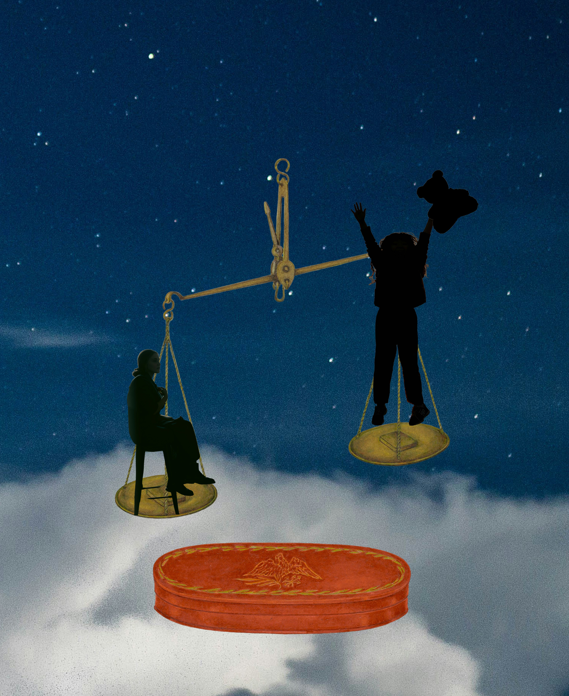
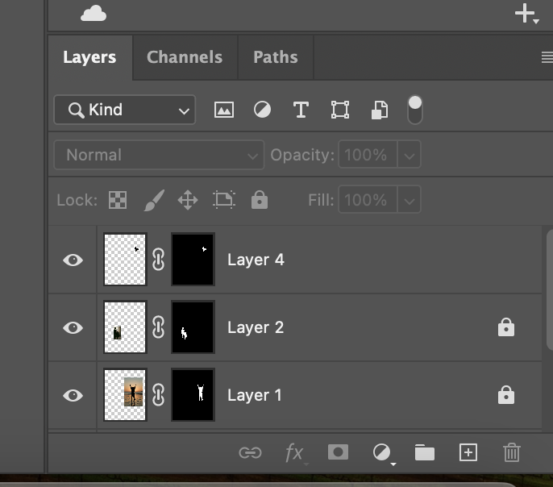

In my image, I have created the feeling of growing up. The scale is the main piece representing the imbalance between childhood and adulthood. There is a woman on the left side of the scale and a girl on the right side. The background setting is up in the night sky. The starry night background symbolized the phrase “reach for the stars,” and the girl is reaching all the way up, representing themes of childhood such as carefreeness and conviction. The girl is also holding a teddy bear to add a touch of playfulness. The woman on the left is looking at the girl herself, reflecting on her childhood, and she is on the heavier side of the scale, representing the responsibilities of becoming an adult. Sometimes it weighs you down. The woman is also placed in the clouds, acting as a representation of her reflecting on her past in a daydream state.
To create this piece, I used images from the National Gallery of Art and Unsplash. For each image, I used the layers function. The scale I used is from a piece called Shaker Scales. I cropped the background out just leaving the two scales. Then, I got the pictures of the girl, woman, and bear I got from Unsplash, and I cropped out the background of these images and then played around with the sizes and angles. For the woman’s image inverted it so she could be facing the girl and tilted it slightly to add a gaze in her direction. For the bear, I selected the subject and then color-filled the image to be black to fit the silhouette theme of the photo.